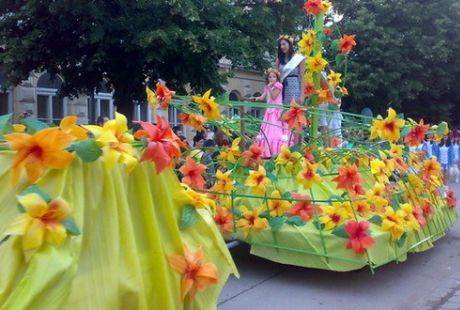

-Prema popisu iz 2022. Bela Crkva ima 9,080 stanovnika.
-Većina stanovnika se bavi voćarstvom i zemljoradnjom, ali i vinogradarstvom.
-U neposrednoj blizini samog grada, nalazi se sedam jezera, što je jedna od najvećih atrakcija.
-Osim Karnevala cveća u Beloj Crkvi se organizuju još dve kulturne manifestacije, „Lov na Besija“ (lov na soma kapitalca) i „Bela Crkva u jabukama".

Interaktivna mapa